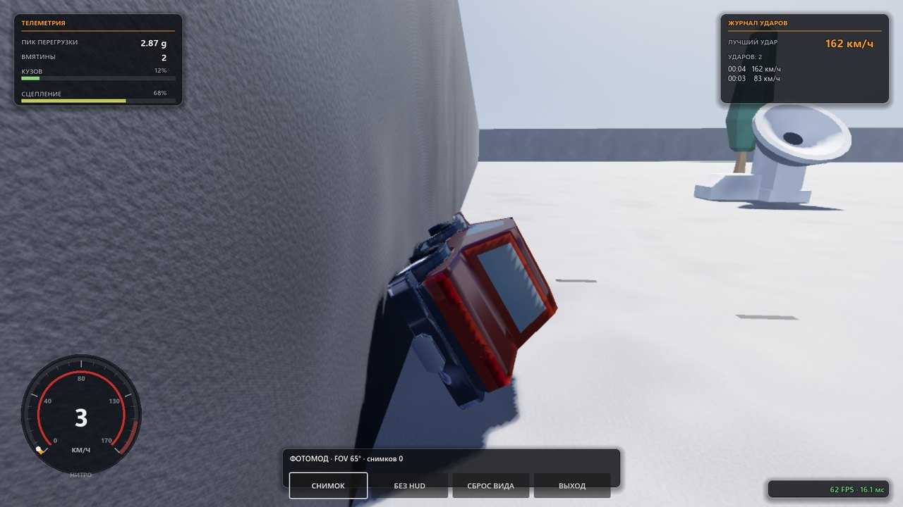
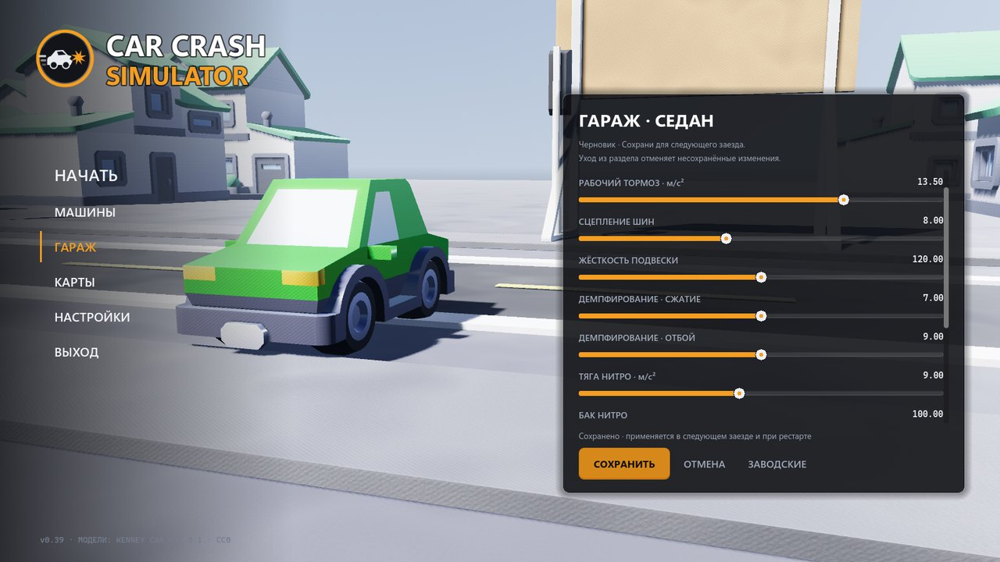
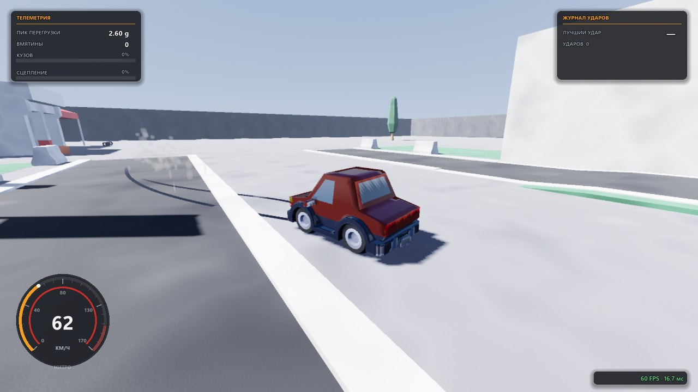

Vertex deformation
Vertices shift along the velocity-loss vector: head-on, side and rear impacts crumple their own panel. Dents accumulate, capped at 30% of the body height, and clear on a restart.
Crash-test sandbox · Godot 4.7.2 · MIT + CC0
Speed up, hit anything — and the body crumples right at the point of impact. Telemetry, a 10-second impact replay, photo mode and a garage with tuning and paint, in one self-contained file per platform.

Section 01 — crash log
Vertices shift along the velocity-loss vector: head-on, side and rear impacts crumple their own panel. Dents accumulate, capped at 30% of the body height, and clear on a restart.
The ring records 20 snapshots a second — chassis, wheels, nearby props and every dent as an event list. The replay plays the recording verbatim; nothing is re-simulated.
Suspension stiffness, dampers, thrust, brakes, grip and the nitro tank — one saved profile per car. Paint touches exactly the body cell of the texture atlas.
Engine, tire squeal, nitro and impacts are synthesized live by a DSP mixer — no samples. The gamepad vibrates on impacts and slides.
A free camera with WASD flight, zoom and PNG screenshots. Hide the whole interface with one key and frame the wreck like a studio shoot.
Image presets plus individual graphics options, slow-mo, two languages switchable on the fly, and rebindable controls — keyboard and gamepad stored separately.
Section 02 — instrument panel
The measured frame cost of this effect composition, live rendering at 1600×900 on integrated graphics. Drag the slider to try your own frame budget.
fits 60 Hz (default preset)
Measured by p_perf, live rendering ·
the game ships at 70% render scale.
Section 03 — evidence board


From a heavy pickup to the Endless car with no speed cap — on a test arena, a town with parked cars, a drag strip, a race loop, an endless strip, the void plane and a big city with districts.
Section 04 — the open source
Every line of the game is on GitHub under MIT, with CC0 assets. The test runner discovers the harnesses on its own, runs them with isolated player profiles and refuses a build that does not boot.
everything rebindable in SETTINGS → CONTROLS · modifiers are part of the binding
Section 05 — pickup
Building from source — Godot 4.7.2 (not .NET) and Node ≥ 22:
node tools/project.mjs build windows. Other releases live on the
Releases page.